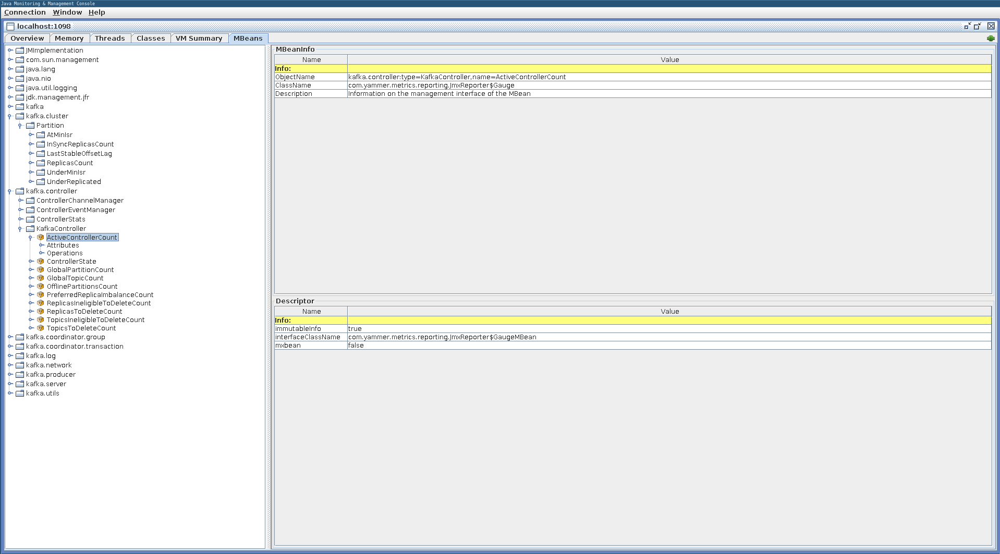
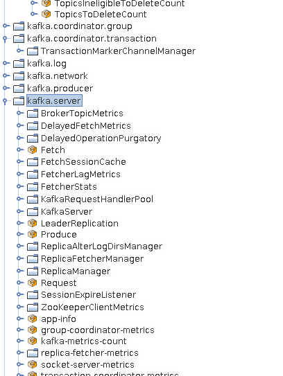

# JMX Metrics
By default, Apache Kafka brokers and clients expose a vast array of JMX metrics.
JMX is the acronym of Java Management Extensions. It's a standard to manage and monitor Java resources at runtime.
# Browsing available metrics
This documentation page lists of available metrics on server side and on client side.
TIP
You should refer to this documentation page if you're looking for a particular metric
For this workshop, you are going to browse all available metrics directly on the broker kafka-1. As you may noticed, this broker is configured to enable JMX connection:
-Dcom.sun.management.jmxremote.ssl=false
-Dcom.sun.management.jmxremote.authenticate=false
-Dcom.sun.management.jmxremote.port=1098
-Dcom.sun.management.jmxremote.rmi.port=1098
-Djava.rmi.server.hostname=kafka-1
-Dcom.sun.management.jmxremote.local.only=false
WARNING
This configuration enables unsecured connections! It's definitively not recommended for production!
You can take a look at all those metrics and their values by connecting to the broker kafka-1.

In case you already have a JDK installed on your computer, you can use the prodived Jconsole tool by doing:
echo '127.0.0.1 kafka-1' >> /etc/hosts
$JAVA_HOME/bin/jconsole localhost:1098
Otherwise, a Docker container is available:
xhost +
docker-compose -f jconsole.yml up -d

# Important metrics
All metrics are useful depending on the context and the problems encountered. During this part, the focus is on the broker metrics. Here are the most important to check and monitor to monitor the health of your Kafka cluster.
| Metrics | Description |
|---|---|
| ActiveControllerCount | Number of active controller in the cluster. There must be only one controller! |
| ZooKeeperExpiresPerSec | A Zookeeper session has expired. It can lead to a new leader election or even a new controller election. |
| OfflinePartitionsCount | Number of offline partitions. It means that those partitions have no leader anymore and so they are unavailable to read and write operations. |
| ConsumerLag | Lag in number of messages per follower replica. This is useful to know if the replica is slow or has stopped replicating from the leader. |
| UnderReplicatedPartitions | Number of under-replicated partitions. It indicates the number of partitions that have not a complete list of ISR. You must be alert when this value is greater than zero. |
| IsrShrinksPerSec | A shrinkage has occurred to the ISR list. It can be due to a network problem or because a broker goes down. |
| IsrExpandsPerSec | It shows an increase in the number of replicas in the ISR list. IsrShrinksPerSec and IsrExpandsPerSec must not change and be equal to zero. |
| BytesInPerSec / BytesOutPerSec | Incoming and Outgoing bytes per second, all topics combined. Those metrics do not include ReplicationBytesInPerSec and ReplicationBytesOutPerSec. |
| MessagesInPerSec | Incoming message rate per second, all topics combined. |
| UncleanLeaderElectionsPerSec | Unclean leader election rate. A new partition leader has been elected which is not from ISR. It's only possible when unclean.leader.election.enable is set to true, default is false |
| RequestHandlerAvgIdlePercent | Average fraction of time the request handler threads are idle. Values are between 0 (all resources are used) and 1 (all resources are available). |
| TotalTimeMs request={Produce|FetchConsumer|FetchFollower} | Total time in ms to serve the specified request. |
How to export all those metrics ?